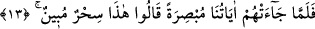

bir ışığı olduğu halde parıl parıl parlayarak “çıksın.” Yâni elini koynuna sokarsan, bu
şekilde çıkar, demektir.
Bu ikisinin (asâ ve beyaz el) de dâhil olduğu “Dokuz mûcize ile Fir’avn ve kavmine”
kıptîlere peygamber olarak gönderilmiş olduğun halde “(git.)” Böylece asâ ve beyaz el
ile mûcîzeler dokuz olmuş olur. Diğerleri arâzîlerde kuraklık, ürünlerde azalma, tûfân,
çekirge, haşerât, kurbağa ve kandır.
“Çünkü onlar artık yoldan çıkmış” yâni inkârda/nankörlükte ve düşmanlıkta haddi
aşmış “bir kavim olmuşlardır.” Bu ifâde Mûsâ (a.s.)’ın peygamber olarak
gönderilmesinin sebebini bildirmektedir.
13. Mûcizelerimiz onların gözleri önüne serilince: “Bu, apaçık bir büyüdür”
dediler.
“Mûcizelerimiz” apaçık ve aydın bir halde “onların gözleri önüne serilince:” Bu
dokuz mûcize Mûsâ (a.s.) tarafından onlara getirilip onun elinde görülünce...
“
” İsm-i fâil olup eğer görülen şeylerden olsa neredeyse kendisini görecek kadar
gözlere fazlasıyla aydın ve açık olduğunu hissettirmek için ism-i mef’ûl mânâsında
kullanılmıştır.
“Bu, apaçık” sihir olduğu besbelli “bir büyüdür” Herkes bunun sihir olduğunu bilir.
“dediler.”
14. Kendileri de bunlara yakînen inandıkları halde, zulüm ve kibirlerinden ötürü
onları inkâr ettiler. Bozguncuların sonunun nice olduğuna bir bak!
“Kendileri de bunlara yakînen inandıkları halde,” Yani, onların nefisleri/kendileri,
yâni kalbleri ve gönülleri yakînî/kesin bir ilim ile O’nun Allah katından olduğunu ve
sihir olmadığını bildikleri halde, demektir.
Ebü’l-Leys der ki: “Kalplerinin bunlara yakînen inanmasının sebebi şudur: Onlar her
âyeti gördükçe Mûsâ (a.s.)’dan yardım istediler ve musîbeti kendilerinden
uzaklaştırmasını taleb ettiler. Bunun üzerine musîbet onlardan kaldırıldı. Böylece bu
mûcizelerin Allah Teâlâ’dan olduğu onlara belli oldu.
Nefsânî “zulüm ve” şeytânî “kibirlerinden” yüz çevirme ve büyüklenmelerinden
“ötürü onları inkâr ettiler.” Onların ilâhî âyetler/mûcizeler olduğunu dilleriyle